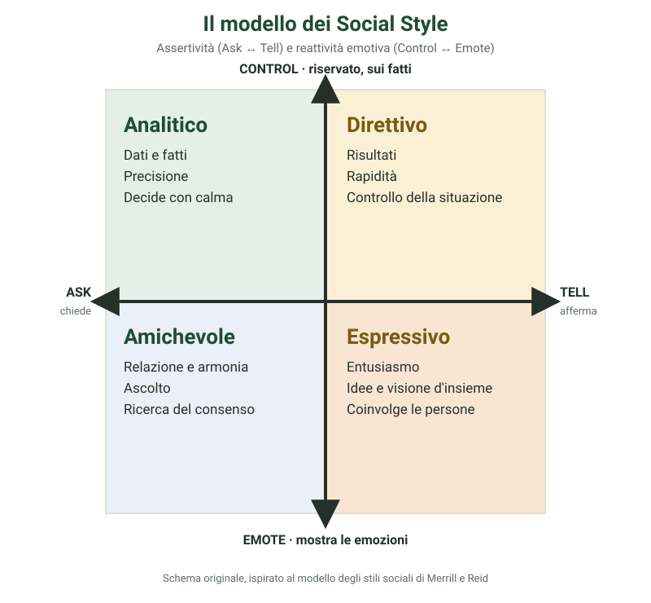

Indice
1. Introduzione
Il modello dei Social Style, o stili sociali, nasce dagli studi condotti negli anni Sessanta dagli psicologi David Merrill e Roger Reid, che osservarono come il comportamento delle persone in situazioni professionali tenda a ricadere in schemi riconoscibili e relativamente stabili. Da questa ricerca è nato uno strumento semplice, diffuso poi in molti programmi di formazione alla vendita, alla leadership e alla comunicazione, per riconoscere il proprio stile relazionale e quello di chi si ha di fronte. L’idea di fondo è pratica, non etichettante: nessuno stile è migliore di un altro. Conoscerli aiuta a capire perché con certe persone la comunicazione scorre naturale e con altre richiede più attenzione, e a modulare il proprio modo di relazionarsi per essere più efficaci.

2. I due assi del modello
Il modello si costruisce incrociando due dimensioni comportamentali, osservabili dall’esterno indipendentemente dalla personalità profonda della persona. La prima dimensione è l’assertività, che va da Ask a Tell: misura quanto una persona tende a esprimere opinioni e a orientare la conversazione in modo diretto, affermando e dando indicazioni, oppure a procedere per domande, ascolto e cautela prima di esprimersi. La seconda dimensione è la reattività emotiva, che va da Control a Emote: misura quanto una persona tende a controllare e mantenere riservata l’espressione delle proprie emozioni, restando concentrata sui fatti, oppure a mostrarle apertamente, con gestualità e tono di voce marcati. Incrociando questi due assi si ottengono quattro quadranti, ciascuno corrispondente a uno stile prevalente: analitico, direttivo, amichevole ed espressivo.
3. I quattro stili
Lo stile analitico è poco assertivo e molto controllato: preferisce dati, fatti e analisi prima di prendere una decisione, parla con misura, evita di esporsi emotivamente, ama la precisione e la documentazione; può apparire distaccato o lento nel decidere, perché vuole prima raccogliere tutte le informazioni. Lo stile direttivo è molto assertivo e molto controllato: va dritto al punto, orientato ai risultati e all’efficienza, parla in modo diretto, prende decisioni rapide, ama avere il controllo della situazione; può apparire brusco o poco interessato agli aspetti relazionali. Lo stile amichevole è poco assertivo e molto espressivo: dà grande valore alla relazione e all’armonia del gruppo, ascolta con attenzione, cerca il consenso, evita i conflitti diretti; può apparire indeciso o eccessivamente accomodante. Lo stile espressivo è molto assertivo e molto espressivo: entusiasta, spontaneo, comunicativo, ama coinvolgere le persone e condividere idee, spesso con gestualità marcata, e guarda alla visione d’insieme più che ai dettagli; può apparire dispersivo o poco attento ai tempi e alle procedure.
4. Come riconoscere lo stile di una persona
Il modello invita a osservare i comportamenti visibili, non a indovinare la personalità: il modo di parlare, il ritmo, il linguaggio del corpo, come organizza lo spazio di lavoro, come reagisce sotto pressione. Chi tende a fare più domande che affermazioni, e a parlare con un tono di voce misurato, è probabilmente più orientato al versante Ask. Chi afferma con sicurezza, interrompe, propone soluzioni rapide, è più orientato al versante Tell. Chi mantiene un’espressione controllata e parla soprattutto di fatti e dati è più orientato al versante Control. Chi gesticola, usa un tono di voce variabile e condivide facilmente stati d’animo è più orientato al versante Emote.
5. La versatilità: la vera abilità da allenare
Il punto centrale del modello non è etichettare se stessi o gli altri, ma sviluppare versatilità: la capacità di adattare il proprio stile di comunicazione a quello dell’interlocutore, senza tradire la propria natura, per rendere lo scambio più efficace. Con una persona analitica, ad esempio, può essere utile arrivare preparati con dati e tempi certi; con una persona espressiva, lasciare spazio al dialogo prima di entrare nei dettagli operativi; con una persona direttiva, essere sintetici e concreti; con una persona amichevole, dedicare qualche minuto alla relazione prima di passare al merito. L’obiettivo non è cambiare chi si è, ma imparare a parlare anche lingue relazionali diverse dalla propria.
6. Per concludere
Il modello dei Social Style è uno strumento pratico, non una diagnosi psicologica: quasi tutti mostrano tratti di più di uno stile, e lo stile prevalente può variare a seconda del contesto, lavoro, famiglia, momenti di stress. Usato con leggerezza, aiuta soprattutto a fare un passo indietro prima di un confronto difficile e a chiedersi che cosa serve davvero, in questo momento, alla persona che si ha di fronte, perché la comunicazione funzioni. Uno spunto di riflessione personale: qual è il mio stile prevalente, e quale stile trovo più difficile da gestire quando lo incontro negli altri?